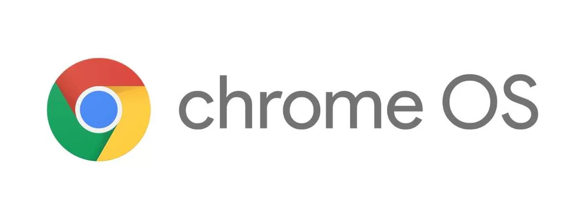

История Chrome OS
Плюсы и минусы ChromeOS
19 ноября 2009 года Google выпустила исходный код Chrome OS под названием Chromium OS. В ноябре 2009 года Сундар Пичаи, тогда вице-президент Google, продемонстрировал на конференции раннюю версию операционной системы. Он показал рабочий стол, внешне напоминавший браузер Chrome, но также включавший вкладки приложений.
Многие считают, что всё знают о системе Chrome OS, ни разу не пользовавшись ей. Пока спорят «Linux или macOS», другая ОС может оставить позади обе эти системы, вместе взятые. Технически Chrome OS — это тоже Linux, но в бытовом контексте считаю разумным их разделять.
Можно назвать пару причин, почему Chrome OS не ограничивается только браузером:
Первая, в Chrome OS есть поддержка Android-приложений. Можно запустить тысячи приложений, не являющихся браузером. Хоть самоучитель китайского, хоть фоторедактор, хоть игру.
Вторая, в Chrome OS возможно использовать гигантское количество обычных десктопных приложений.
Десктопное приложение — программа, которая устанавливается на компьютер пользователя и работает под управлением операционной системы. Такие приложения высокопроизводительные, могут работать напрямую с принтерами, сканерами, факсами и прочей техникой.
Десктопное приложение запускает системные файлы из памяти компьютера и не нуждается в постоянном обновлении данных и загрузки параметров из сети. Поэтому при использовании нормального оборудования, даже мощные приложения запускаются быстро. Качественный пользовательский интерфейс.
И это ещё не самое масштабное: в Chrome OS возможно запустить даже полноценную IDE. (Интегрированная среда разработки (IDE) – это программное приложение, которое помогает программистам эффективно разрабатывать программный код.) Не гарантирую, что в ней всё будет идеально работать, но сам факт уже показателен — если с проектом такой сложности возможно иметь дело, то с каким-нибудь Visual Studio Code тем более.
И, пожалуй, самая важная и интересная причина: Конкретно Android Studio (гугловская IDE для Android-приложений) не просто запускается на Chrome OS, а даже официально поддерживает эту ОС. А теперь вспомним, что в Chrome OS можно установить Android-приложения, пока в Windows только собираются это добавить. Получается, тут можно кодить Android-приложение на ноутбуке и сразу устанавливать его на сам этот ноутбук, пока в других ОС такое сделать нельзя. И система, на которую принято смотреть снисходительно, в этом вопросе внезапно оказывается мощнее других.
Тут в одной системе сосуществуют три совсем разных подхода — веб (где всё есть сайт), Linux (где всё есть файл) и Android (где всё есть приложение). И взаимодействие этих подходов совсем не бесшовное: иногда даже буфер обмена между браузером и Android-приложением не хочет нормально работать.
ОС ChromeOS, плюсы
Просто
Chrome OS — это простота. Операционная система настолько проста, что ей может пользоваться даже ваша бабушка. Кроме того, она быстро работает и загружается через считанные секунды.
Дешево
Chrome OS имеет открытый исходный код и совершенно бесплатна. Она предназначена для решения простых задач, таких как просмотр веб-страниц и запуск Android-приложений, и для этого ей не требуется высокопроизводительное оборудование.
Поддержка Android-приложений
Все хромбуки, выпущенные за последние несколько лет, поддерживают приложения для Android, что делает их намного более полезными, чем прежде.
Поддержка Linux-приложений
В последние годы Google добавил и поддержку приложений для Linux. Это означает, что на хромбуках теперь можно запускать программное обеспечение на уровне рабочего стола, учитывая, что они имеют достаточно мощности для их запуска.
Безопасность
Благодаря своей простоте Chrome OS намного безопаснее, чем ноутбуки на Windows, тем более, что большая часть того, что вы загрузите на хромбук, будет из Play Store. Также пользователям доступны частые автоматические обновления Chrome OS и встроенная защита от вирусов.
Облачная версия
Chrome OS разработана как облачная система, насколько это возможно. Это значит, что вам будут доступны все интернет-сервисы Google, включая «Google Документы» для создания документов, «Google Диск» для хранения файлов и «Google Фото» для всех ваших изображений. Это означает, что вы можете получить доступ ко всем этим файлам и документам на других устройствах с выходом в интернет, независимо от вашего местоположения. Вы также можете быть уверены, что в случае потери, кражи или поломки вашего хромбука вы не потеряете свои файлы.
ОС Chrome OS минусы
Совместимость программного обеспечения
Вы не можете использовать полноценные версии Photoshop, Microsoft Office и многих других программ на хромбуке. То есть, если приложение недоступно для Linux, то и на Chrome OS его не будет. А если вы установите мобильные версии приложений, то, скорее всего, лишитесь многих важных функций.
Мало место для хранения
Поскольку Chrome OS основана на облаке, внутреннее хранилище, которое вы получите на хромбуке, будет меньше, чем у стандартного ноутбука с Windows. Вместо 500 ГБ обычно у хромбуков 64 ГБ памяти. Но это не такой большой недостаток, поскольку с облачными сервисами вам не нужно много места на диске.
Работа без интернета
Устройства на Chrome OS работают лучше всего, когда имеют доступ к интернету. Да, вы можете использовать их в автономном режиме, но вряд ли получите от этого хороший опыт. Некоторые приложения вообще не работают без подключения к интернету, в то время как функции других программ в автономном режиме будут ограничены.
Статистика по ChromeOS
Согласно данным StatCounter на февраль 2021 года, доля Chrome OS на мировом рынке операционных систем составляет 0,71%. Однако, следует отметить, что это процент растет в последнее время, так как Chrome OS увеличивает свои функциональные возможности и привлекает новых пользователей. Chrome OS - это операционная система на базе Linux, разработанная Google, которая работает исключительно с аппаратурой Chromebook. Это означает, что использование Chrome OS ограничено теми, кто использует устройства Chromebook. Chrome OS - это быстрая, простая и легковесная операционная система, созданная специально для работы в облачном пространстве. Chromebook предоставляет пользователям доступ к Google Apps, таким как Google Docs, Google Sheets, Google Slides, а также к Chrome Web Store, где могут быть скачаны многие приложения и расширения. В целом, ChromeOS является простым и доступным вариантом для тех, кто ищет высокую производительность и безопасность в онлайн-среде.